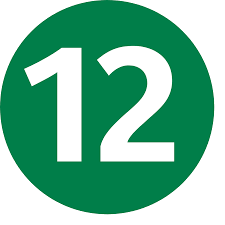
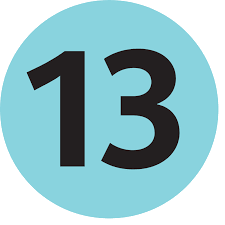
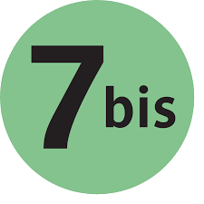
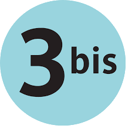

ELEMENTS FROM HECTOR GUIMARD'S ORIGINAL DESIGN OF PARIS METRO GATES FROM 1900.
CURRENT OFFICIAL FONT OF PARIS METRO, PARISINE, DESIGNED BY JEAN FRANÇOIS PORCHEZ AS A MORE READABLE VERSION OF HELVETICA




